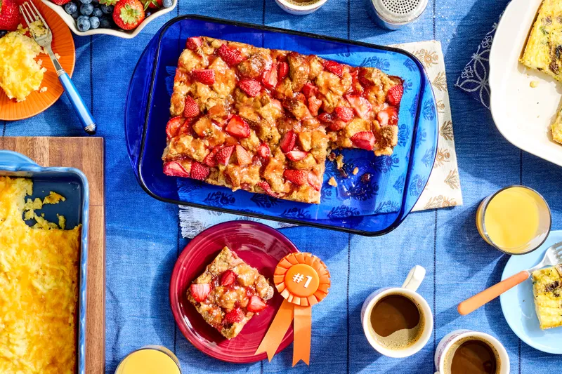

Apple Cider Bath Cinnamon Rolls
Soft, spiced rolls finished with a cider glaze.
A little inspiration for your table
Find a new favorite in this collection of comforting, approachable recipes. Choose something sweet, cozy, or perfect for dinner tonight.

From our kitchen